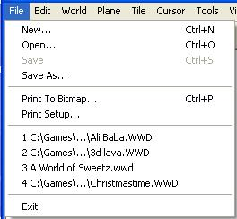

| File Menu  |
|---|
| New …(Ctrl+N) |
| Creates a new level file (.wwd file). I strongly recommend not starting a new level this way. Instead, it is recommended that you use a "template level" to begin your new level. Simply copy the "template level" and rename it and make sure to keep a backup of your "template" levels. |
| Open …(Ctrl+O) |
| Opens an existing level file (.wwd file). 1 A dialog box will open. If your Custom folder contents are displayed, go to step 3. 2 Use the navigation gadgets to locate your Custom folder within your Gruntz folder. 3 Use the slider gadgets to display the name of the Custom Level you want to load. 4 Select the Custom Level. Method 1 Click on the Custom Level name, then click on "Open". Method 2 Double-click on the Custom Level name. Open a template, using the above method, then immediately do a "Save as" with your new Custom Level name. In the Gruntz Level Editor ZIP archive, there are 8 Quest templatez and 8 Battle templatez. I (GooRoo) have created my own set of 8 very small (28 X 16) Quest templatez that you may download from here:
|
| Save (Ctrl+S) |
| Saves your current level. If it has not been saved previously, you will be prompted for a name. |
| Save As… |
| Saves the current level under a new file name. After opening an existing "template level", use this feature to save the level as a new level. This is the recommended method for starting a new level. |
| Printing to Bitmap… (Ctrl+P) |
| This is a VERY useful feature for analyzing the levels for playability stuff and overall layout design. Ctrl+P (or "File | Print To Bitmap") will bring up a dialog where you can enter the bitmap filename, choose the scale value (100%, 50%, 25%, or 12%) and specify whether or not you want the objects printed as well. The current plane/layer is then dumped (in it's entirety) to the specified file and you can then use your favorite paint program to view and/or print it. |
| Print Setup... |
| Opens a Windows dialog box to select a printer, and set options, number of copies, etc. |
| (History list of Custom Levelz accessed) 1 2 3 4 |
| Exit |
| Closes the Gruntz Level Editor, and returns primary control to the next Windows application. |